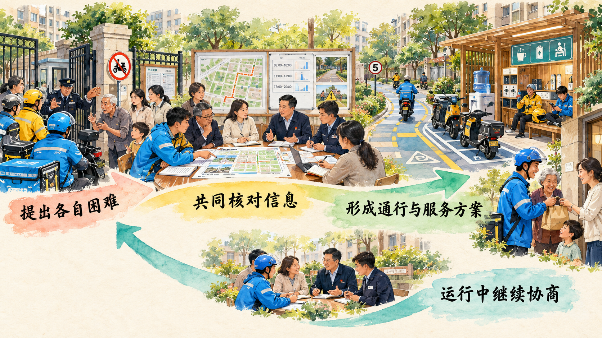
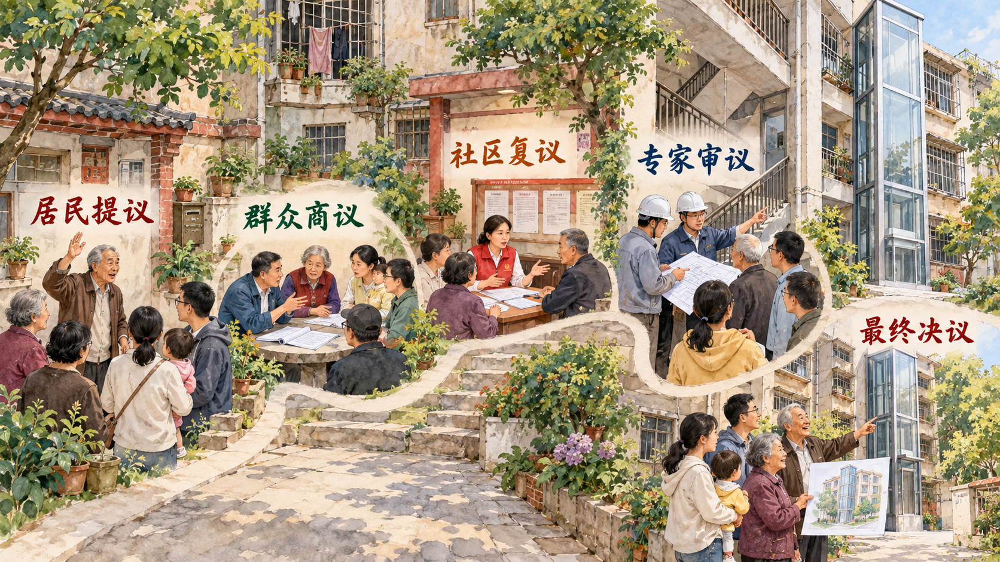

同一扇小区门，骑手、居民和物业为什么会有不同答案
人民当家作主需要完整制度体系。根本政治制度、基本政治制度和重要政治制度各有功能，民主选举与协商民主相互补充，基层群众自治使居民能够依法直接处理身边公共事务。本节通过外卖骑手进入小区和老旧住宅加装电梯两个问题，观察多元诉求怎样转化为可执行的公共方案。
一、加强人民当家作主制度保障
人民代表大会制度是我国的根本政治制度，保证人民依法通过人民代表大会统一行使国家权力。中国共产党领导的多党合作和政治协商制度、民族区域自治制度、基层群众自治制度，为不同层级、不同领域的参与提供基本制度安排。一系列重要政治制度又把选举、协商、决策、管理和监督落实到国家治理各环节。
制度体系需要相互衔接。人大依法行使立法、监督、决定和任免等职权，政协围绕重大问题协商议政，政府在履职过程中听取各方面意见，基层群众性自治组织围绕社区和村庄公共事务组织群众参与。不同渠道各有法定职责和成果去向。
二、全面发展协商民主
协商民主通过制度化渠道，使不同主体在决策之前和决策实施过程中充分表达意见、交换信息并凝聚共识。协商的价值不只在于让每个人发言，还在于把生活经验、专业知识、公共责任和执行条件放到共同议题中比较，使方案具有可接受性和可执行性。
案例研究｜外卖能不能送到家门口
午饭高峰期，外卖骑手希望尽快把餐送到居民门口。老人、儿童家庭和物业担心陌生车辆快速穿行，平台计时又使骑手承受超时压力。小区完全禁止骑手进入，行动不便的居民和骑手需要承担额外成本；不设置通行规则，公共安全和生活秩序又可能受到影响。
这一矛盾在杭州市上城区笕桥街道天新社区具有非常具体的表现。红街公寓业委会和物业反映，少数骑手进入小区后行驶过快，也出现过公共设施受损等问题；骑手面对的困难则是登记耗时、楼栋难找、车辆不能进入后需要徒步搬运，平台倒计时仍在继续。社区党总支书记张叶平发现，简单要求物业“加强管理”，无法同时解决平台计时、身份核验、通行路线和居民安全四类问题。
2025 年 10 月，“委员进社区”试点把这一冲突变成“骑手友好小区建设”微协商议题。市政协社法委组织政协委员、智库专家，市委社会工作部、市住保房管局、市市场监管局、市总工会等部门人员，以及街道、社区、业委会和物业代表共同参加。会议先听社区介绍试点难点，再把问题拆成几项可以讨论的具体任务：平台算法怎样同小区通行时间衔接，骑手身份怎样快速核验，电动车在哪里停放，进入以后走哪条路线，发生纠纷由谁沟通。
委员和专家提出把全市统一的“小哥码”同小区门禁系统衔接，使骑手完成身份认证后扫码通行；小区可以优化配送路线、明确限速和行为规范，无法骑车进入的区域由物业配置推车；社区还要建立居民、物业和平台外卖站点之间的常态化沟通机制。这样，骑手每次进门不再重复说明身份，物业能够追踪通行主体，居民也能知道遇到问题向谁反馈。
协商还把“管理骑手”扩展为“服务骑手”。天新社区联合辖区 10 余家商户组建服务联盟，升级“尚小驿”站点，提供饭菜加热、茶水热饮、手机和电动车充电、雨具及应急药品。物业、业委会和平台站点组成协同治理架构，通行规则与休息补给同时落地。骑手在社区中既是配送服务提供者，也可以成为发现消防隐患、道路破损和独居老人需求的流动观察者。

这一过程显示，不同主体掌握的信息并不相同。骑手了解配送路线和时间压力，居民了解儿童、老人和公共空间的安全需求，物业承担现场管理责任，平台掌握订单和身份数据，政府部门了解劳动保障、市场监管和物业管理的制度边界。协商把分散信息组合成身份核验、路线设置、服务补给和常态沟通四项安排，并在运行中继续修正。
讨论题
- 小区完全禁止骑手进入和允许骑手不受限制通行，分别会把哪些成本交给他人承担？
- 骑手、居民、物业、平台和政府部门各自掌握哪些不可替代的信息？
- 线上投票选出“允许”或“禁止”以后，为什么仍然需要面对面协商？
资料来源：杭州市政协《“委员进社区”深入基层察民情、解民忧、聚民心》，2025 年 10 月 30 日；中国人民政治协商会议全国委员会《牢记嘱托 履职为民｜让社区服务更有温度治理更有力度——杭州市政协“委员进社区”的故事》，2026 年 1 月 7 日。
三、积极发展基层民主
基层群众自治使城乡群众依法直接行使民主权利，管理基层公共事务和公益事业。基层事务往往同居民日常生活直接相连，事实细节多、利益关系具体、执行条件复杂，因此需要群众参与、协商、决策、管理和监督形成闭环。
案例研究｜高层老人盼电梯，低层住户怕挡光
重庆民主村社区老年居民较多。对高层住户来说，没有电梯意味着每天上下楼都要计算体力；对低层住户来说，电梯井可能影响采光，设备运行还会带来噪音。二十多户高层老人联名提出加装电梯后，低层住户在群众商议阶段提出异议，方案没有直接通过。
提出申请的是高层居民陈代蓉。她牵头联系 20 多户高层老人，把共同愿望写成加装电梯申请。进入群众商议后，支持者人数较多，低层住户提出的采光、噪音和房屋价值问题也十分具体。社区没有把多数人的赞成直接当作决定，第一次复议没有通过，项目回到利益协调和方案修改阶段。
社区随后启动“五议协商”。居民提议把分散愿望变成正式议题；群众商议让高低层住户面对面说明日常困难；社区复议由干部逐户走访，帮助低层住户争取采光补偿和噪音治理；专家审议邀请规划、住建等部门专业人员实地查看楼栋间距、通道和施工条件，形成可实施的设计方案；最终决议再由全体居民代表投票。每一步都改变了下一步讨论的信息条件。
例如，“老人需要电梯”回答了为什么要改，“低层住户担心挡光”指出了谁可能承担额外成本，“采光补偿和噪音治理”把反对意见转化为方案约束，“专家出具设计”则检验居民设想能否满足规划、施工和安全要求。协商把不同利益写进同一份可执行方案，使各方意见共同成为完善方案的条件。

2024 年 5 月，民主村社区为 3 栋楼 128 户居民新装了 4 台电梯。陈代蓉和邻居第一次乘坐新电梯时，改变已经从图纸和会议进入每天上下楼的生活。电梯落成前的关键变化，是“要不要装”逐渐转化为“怎样处理采光、噪音、费用和施工条件”。多数人的共同愿望、少数住户的切身利益、专业设计和公共决议在同一程序中得到安排。
讨论题
- 第一次群众商议中多数人支持以后，项目为什么仍然没有立即通过？
- 采光补偿、噪音治理和专家设计分别回应了哪一种诉求？
- 如果你是低层住户或高层老人，你会提出怎样的可执行方案？
资料来源：杨铌紫、齐岚森《民主村走上“幸福路”，关键在“民主”》，新重庆—重庆日报、七一网，2026 年 7 月 4 日。
参考资料｜人大协商、政协协商与基层协商怎样发挥作用
人大协商发生在各级人大依法行使职权的过程中，可以围绕立法、监督和重大事项同国家机关、社会组织、专家学者和人民群众开展沟通协商。协商形成的信息进入人大法定职权的行使过程。
政协协商以人民政协为制度载体，参加政协的党派团体和各族各界人士围绕改革发展稳定重大问题，在决策之前和实施过程中协商议政、凝聚共识。政协提案、调研报告和协商意见进入有关机关研究办理和反馈过程。
基层协商围绕社区、村庄和单位中同群众切身利益相关的问题展开。基层党组织、基层政府、群众性自治组织、经济社会组织和群众共同参加，协商成果可以进入居民公约、村规民约、自治组织决定和具体治理方案。
三类协商的参与主体、制度载体和成果去向各有侧重。共同之处在于把公共问题交给相关主体充分讨论，使意见表达、信息汇集、依法决策和实施反馈相互衔接。
资料来源：国务院新闻办公室《中国的民主》，2021 年 12 月；《中国人民政治协商会议章程》；中央关于加强社会主义协商民主建设的权威文件。